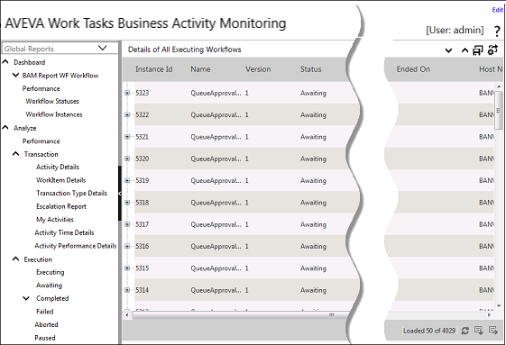
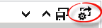
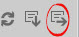

No
The BAM Control provides extensive reporting capability and true BAM functionality. It provides users with several out-of-the-box reporting and activity monitoring views. In addition, it allows users to configure Data Points and KPIs for comprehensive business activity monitoring. It is one of the crucial controls in AVEVA Work Tasks.
You can see a three-dimensional view of the following BAM Reports by rotating the axis of the graphs:
Default Report View

The BAM Control page displays the following default report view when the Control is executed. You can set the application name and workflow name to the respective property of the BAM Control. If no workflow name is set then the BAM Reports are shown for the entire application, covering all the workflows in it. This constitutes the "Global Reports". At the top right of the Report window are the [+] and [-] icons to expand and collapse all the nodes respectively.
Report Type Tree View
The Default Report window represents the general layout of the BAM Control user-interface, which it shares with all other report windows. The user-interface elements and functionality described in this topic apply to all the other report windows. The window has the Workflow list at the upper left. It lists all the workflow names in the application along with the "Global Reports" option. When any workflow name is selected from the list, all the reports will display information related to the selected workflow.
The Report Type tree has the following nodes:
Note: The BAM tree in the Business Activity Monitoring interface, by default, shows a one level expanded view instead of a fully expanded tree view.
The report view is on the right of the window. It presents the report information in several columns, with the column displayed depending on the type of report selected. You can right-click a column name to open the shortcut menu, where you can perform report list management operations such as sorting and grouping on the columns.
Save Layout
You can customize the view and save the layout by clicking the Save Layout icon. This opens a window where you can specify a name with which the customized report layout will saved.
You can enter the file name for the saved layout in the Layout Name box. After specifying the name, click OK to save the layout. You can click Cancel to close the window without saving the layout. Any layout saved in this window will be added under the node corresponding to the report type being saved as a custom layout (for example, Executing). You can select it from here to view the report in the customized layout.
In addition to the other icons, a Delete icon is displayed when you open a custom layout. You can click the delete icon to delete the open custom layout.
Export Settings
Use the Export Settings icon to set the number of records to export.

You can enter only valid positive integer values.
The Reports grid refreshes and displays the number of records entered in the Export Settings dialog box.
When you enter a value for export, the number of records exported will be the first record to the number entered. For example, if the grid contains 25 records and you want to export 12 records, records from 1 to 12 will be displayed in the refreshed grid and can be exported. You cannot enter a value range for export. Also, if the number entered exceeds the maximum records present, the highest number of records present will be exported.
Export Grid
You can export the contents of the report to different formats using the Export grid tool at the lower right of the window.

Clicking the export tool opens the export type selector, which lists all the available types with radio buttons to select them.
There are three sets of options. The first has the Export root table, which can be clicked to select the root table for export. The second set lists all the common file formats, such as HTML, PDF, XML, Excel, TIFF, RTF, and TEXT. The last set has the Portrait and Landscape options to select the orientation of the exporter report. After making the export settings you need to click Export now to export the file.
Escalation Report:
Description:
The Escalation Report gives in-depth details about escalations. It shows the user name, date, timeout settings, escalation type (Recurring or Non-Recurring), task details, and workflow and application details. The report has a drill down feature which shows the Process Execution view for the instance. Double-click the data to view the Process execution details.
Location:
On Enterprise Console, clicking the left <Analysis> button brings up the Business Activity Monitoring (BAM). In the BAM Left Panel Tree view, click the <Analyze> node. Under this, you can locate the <Transaction > node which has the Escalation Report option. See the following image to identify the report.
Report Parameters:
By selecting the ‘From’ and ‘To’ dates, the user can get the details of the escalations that occurred for the given date range. To see the ‘Process execution view’ for the instance, double-click the data.
Report view:
It shows the user name, date, timeout settings, escalation type (Recurring or Non-Recurring), task details, and workflow and application details. Escalation report also has the column filter features available in other reports.
Double-click the data for the instance to view the Process execution view.
Process execution view:
Scenario:
John Smith works as the Administrator for ‘XYZ’ organization. He wants to monitor the Escalations that occurred in the workflow for a given date range. By using the escalation report, Smith can get the details of the same and can take the necessary steps.